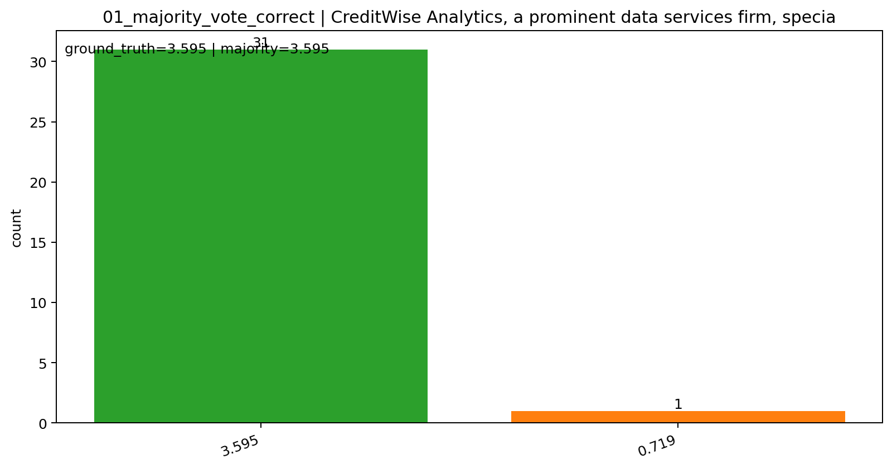

来源文件
7.jsonl
prompt_index
21
分类
majority vote correct
ground truth
3.595
majority answer
3.595
sampled answer 分布
{'3.595': 31, '0.719': 1}
错误 rollout
local_idx=10
, solved_objective=0.7190000000000001
错误答案成因
这组样本多数票是对的，但错误 rollout 把题目要求的 total aggregate predictive strength 改写成了 average predictive strength。
原题明确要求的是 total aggregate predictive strength；而错误 rollout 在代码里把 4 个因子的总和全部又除以 5，于是目标值整体缩小为原来的 1/5：
- 正确值:
3.595 - 错误值:
0.719 - 关系:
0.719 = 3.595 / 5
原始文本片段（标出错误点）
python# Define average impact scores (sum over 5 applicants) S_IS = 0.85 + 0.60 + 0.90 + 0.75 + 0.50 S_BA = 0.70 + 0.80 + 0.50 + 0.95 + 0.60 S_DER = 0.40 + 0.55 + 0.65 + 0.30 + 0.70 S_PHS = 0.90 + 0.75 + 0.60 + 0.80 + 0.55 S_IS /= 5 S_BA /= 5 S_DER /= 5 S_PHS /= 5 # Objective: maximize weighted average predictive strength model.setObjective(w_IS * S_IS + w_BA * S_BA + w_DER * S_DER + w_PHS * S_PHS, GRB.MAXIMIZE)
标注:
[错误点]S_IS /= 5、S_BA /= 5、S_DER /= 5、S_PHS /= 5[错误点]目标函数随后最大化的是weighted average predictive strength，不再是题目要求的 total。
结论
这个错误不会改变最优权重结构，但会把最终 objective 数值整体缩小 5 倍，所以单条 rollout 答错；其余 31 条 rollout 保持 total 定义，因此 majority vote 仍然正确。